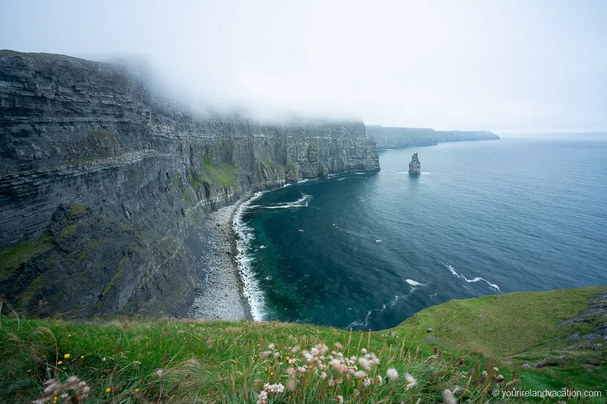

The Scalp
Dún Laoghaire, Ireland
Overview
Found in County Wicklow, This climbing area has many different variations in climbs for experienced and non experienced climbers. With some very popular climbs being "Tough and Tricky Boulder" which contains extremely steep and sheer bouldering with advanced technique required.Grading - Harold Johnson did not believe that he could climb anything harder than V Diff so he graded his routes from this grade downwards. It is now quite clear that he very seriously underestimated his abilities. Do not fall into the trap of believing him. V. Diff can mean VS or even HVS.
Doolin
Inis, Ireland
Overview
Seaside limestone bouldering near Doolin, loads of problems from easy to high 7's known as more of a summer/spring climbing area. Extremely popular with new and experienced climbers. Note that parking for the location can be limited and overnight parking is prohibited The bouldering area at Lackglass near Doolin is one of my favourite outdoor places in the country, to climb or to just chill out and enjoy the relative solitude.It’s a relatively short walk in, through a couple of stony Burren fields and along a stone wall all the way to the coast. With the sun on your face and view cross the Atlantic ocean to the Aran Islands and beyond, on a good day, it’s ace.
Black Valley
Trá Lí, Ireland

Overview
An extremely beginner friendly climbing location, Found in the scenics of Kerry you can back your climbing boots and have a day out learning the ropes of outdoor bouldering in this natural rock formation. The Black Valley lies on the road between Moll's Gap and the Gap of Dunlow - a beautiful and isolated valley in the heart of Killarney National Park. Most visitors hasten by on the way to the drama of the Gap of Dunloe. Instead, stop, look around, take a walk. The Black Valley was the last place in Ireland to receive an electrical supply - in the 1970's.